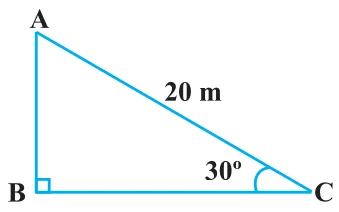
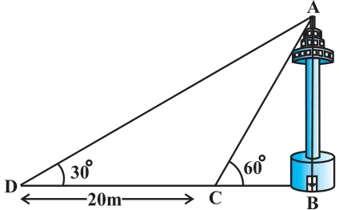
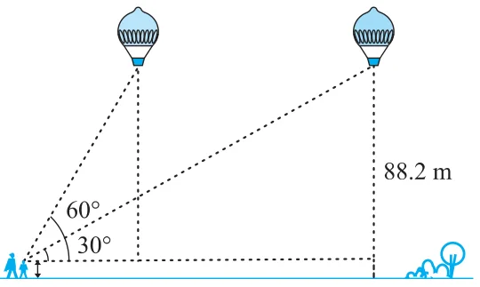

EXERCISE 9.1
- 1.A circus artist is climbing a 20 m long rope, which is tightly stretched and tied from the top of a vertical pole to the ground. Find the height of the pole, if the angle made by the rope with the ground level is \(30^{\circ}\) (see Fig. 9.11).

- 2.A tree breaks due to storm and the broken part bends so that the top of the tree touches the ground making an angle \(30^{\circ}\) with it. The distance between the foot of the tree to the point where the top touches the ground is 8 m. Find the height of the tree.
- 3.A contractor plans to install two slides for the children to play in a park. For the children below the age of 5 years, she prefers to have a slide whose top is at a height of 1.5 m, and is inclined at an angle of \(30^{\circ}\) to the ground, whereas for elder children, she wants to have a steep slide at a height of 3m, and inclined at an angle of \(60^{\circ}\) to the ground. What should be the length of the slide in each case?
- 4.The angle of elevation of the top of a tower from a point on the ground, which is 30 m away from the foot of the tower, is \(30^{\circ}\). Find the height of the tower.
- 5.A kite is flying at a height of 60 m above the ground. The string attached to the kite is temporarily tied to a point on the ground. The inclination of the string with the ground is \(60^{\circ}\). Find the length of the string, assuming that there is no slack in the string.
- 6.A 1.5 m tall boy is standing at some distance from a 30 m tall building. The angle of elevation from his eyes to the top of the building increases from \(30^{\circ}\) to \(60^{\circ}\) as he walks towards the building. Find the distance he walked towards the building.
- 7.From a point on the ground, the angles of elevation of the bottom and the top of a transmission tower fixed at the top of a 20 m high building are \(45^{\circ}\) and \(60^{\circ}\) respectively. Find the height of the tower.
- 8.A statue, 1.6 m tall, stands on the top of a pedestal. From a point on the ground, the angle of elevation of the top of the statue is \(60^{\circ}\) and from the same point the angle of elevation of the top of the pedestal is \(45^{\circ}\). Find the height of the pedestal.
- 9.The angle of elevation of the top of a building from the foot of the tower is \(30^{\circ}\) and the angle of elevation of the top of the tower from the foot of the building is \(60^{\circ}\). If the tower is 50 m high, find the height of the building.
- 10.Two poles of equal heights are standing opposite each other on either side of the road, which is 80 m wide. From a point between them on the road, the angles of elevation of the top of the poles are \(60^{\circ}\) and \(30^{\circ}\), respectively. Find the height of the poles and the distances of the point from the poles.
- 11.A TV tower stands vertically on a bank of a canal. From a point on the other bank directly opposite the tower, the angle of elevation of the top of the tower is \(60^{\circ}\). From another point 20 m away from this point on the line joing this point to the foot of the tower, the angle of elevation of the top of the tower is \(30^{\circ}\) (see Fig. 9.12). Find the height of the tower and the width of the canal.

- 12.From the top of a 7 m high building, the angle of elevation of the top of a cable tower is \(60^{\circ}\) and the angle of depression of its foot is \(45^{\circ}\). Determine the height of the tower.
- 13.As observed from the top of a 75 m high lighthouse from the sea-level, the angles of depression of two ships are \(30^{\circ}\) and \(45^{\circ}\). If one ship is exactly behind the other on the same side of the lighthouse, find the distance between the two ships.
- 14.A 1.2 m tall girl spots a balloon moving with the wind in a horizontal line at a height of 88.2 m from the ground. The angle of elevation of the balloon from the eyes of the girl at any instant is \(60^{\circ}\). After some time, the angle of elevation reduces to \(30^{\circ}\) (see Fig. 9.13). Find the distance travelled by the balloon during the interval.

- 15.A straight highway leads to the foot of a tower. A man standing at the top of the tower observes a car at an angle of depression of \(30^{\circ}\), which is approaching the foot of the tower with a uniform speed. Six seconds later, the angle of depression of the car is found to be \(60^{\circ}\). Find the time taken by the car to reach the foot of the tower from this point.